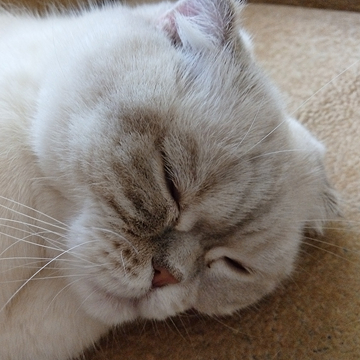

Впервые о кошках с загнутыми ушами сообщил изданный в Китае еще в 1796 году «Всемирный журнал знаний и развлечений». В XX же веке о них услышали тогда, когда в 1961 году в Шотландии была обнаружена кошка с измененным строением ушных раковин. Она отличалась характерной внешностью, благодаря ушкам, которые она носила наподобие шляпки. Но у каждого человека свое представление о красоте, и во многих странах эта порода подверглась критике. Такое строение уха скорее аномалия. Из-за этого шотландские вислоухие кошки не допускаются к участию в конкурсах в Великобритании. Однако у них огромное число поклонников. Скоттиш фолд - очаровательное чувствительное создание.
Она хорошо ладит с другими кошками, домашними животными, детьми и даже незнакомыми ей людьми. Загнутые ушки не причиняют им никакого вреда, а придают внешности ярко выраженную индивидуальность. В США шотландских вислоухих кошек выводят специально для того, чтобы сохранить оригинальное строение их ушей, тогда как в Великобритании этот признак выбраковывается.
Вислоухость - это естественная мутация. Она передается по наследству при спаривании с британской короткошерстной кошкой, стандарту которой скоттиш фолд полностью соответствует. Однако вислоухость не является доминантным (преобладающим) признаком. Поэтому получить скоттиш фолда, непросто.
Отношение людей к этой породе кошек, так же как и к сфинксам или им подобным, неоднозначное. С одной стороны мы видим радость селекционеров-экспериментаторов, а с другой - требование не разводить животных с неестественными (по мнению человека) признаками и прекращать подобную работу у ее истоков.
Тело скоттиш фолда средней величины. Все в нем слегка закруглено. Круглая головка сидит на крепкой толстой шее. Щеки толстые с хорошо выраженными подушечками вибрисс («усами»). Все скоттиш фолды обладают огромными круглыми глазами. Их цвет должен гармонировать с окрасом шубки. Короткая, густая и упругая шерсть. Окрасы те же, что и у британских короткошерстных кошек. Хвост толстый в хорошей пропорции к телу.
Главной особенностью скоттиш фолда являются его маленькие уши. Они должны быть сложены вперед и вниз, что вполне соответствует круглой форме головы.
Никакого особого ухода за скоттиш фондами не требуется. Только ушки нужно содержать в чистоте, да несколько раз в неделю расчесать шерсть Вашего питомца, чтобы шубка выглядела опрятной и аккуратной.
У шотландских вислоухих котят ушки могут быть лишь слегка загнутыми, окончательная форма уха проявляется примерно к 10-месячному возрасту.
Яркая индивидуальность, неповторимый облик, мягкий спокойный нрав и совершенная неприхотливость делают скоттиш фолда идеальным животным для содержания в доме. А радость общения с живым существом принесет Вам немало приятных мгновений.